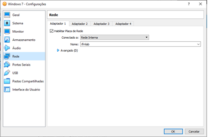
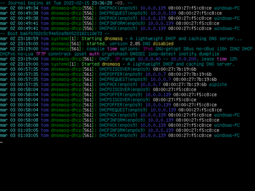

Instalação de servidor DNS e DHCP
Preparação do ambiente
- Importação das máquinas virtuais
- Configuração das interfaces de rede

Configure a máquina
- mudar o hostname
hostnamectl set-hostname- tom_servidorhostnamectl set-hostname- frajola_cliente
- Endereço IP fixo nos adaptadores
Irei usar o editor nano
# nano /etc/network/interfaces
Reinicia o serviço Network# systemctl restart networking
Montando um servidor de DHCP para laboratório Ifrnlab
- Instalar o Servidor DHCP para oferecer endereços IPs Para a rede ifrnlab
apt-get install -y dnsmasq
-
Configure o arquivo do Servidor DNS com dnsmasq
-
Faixa de IP para atribuição por DHCP
-
Atribuir IP fixo aos hosts
-
etc/dnsmasq.d/dnsmasq.conf
precisamos definir os IPs que serão distribuídos e o lease-time deles.
Para testar a sintaxe de suas configurações (independente do serviço configurado), utilize:
dnsmasq --test
Pinte seus registros com CCZE
apt-get install ccze
Para iniciar o servidor use o comando:
dnsmasq.service
Para ver se o dnsmasq iniciou adequadamente, verifique o journal do sistema:
journalctl -u dnsmasq.service |ccze
- servidor em funcionamento

- IP atribuido ao clinte 1
- IP atribuido ao clinte 2